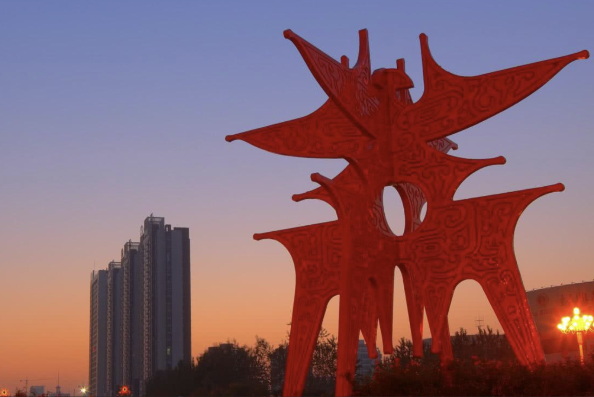

纸本花圃 · 个人主页
个人简历
想把这个页面做成一页慢慢翻开的校园剪贴簿：有手工的温度，有故乡的气息，也有对未来的认真期待。
基本信息
我的名字叫李昭政，我是一名 新疆师范大学 计算机科学与技术学院的学生。
我的兴趣爱好
我平时闲着的时候就爱做手工，千纸鹤、纸星星、小盒子之类的。桌上放着自己折的小摆件，看着心情就挺好。有时候会做一些小手工送给他们，虽然不值钱，但大家也都很乐意接受。我觉得手工这东西，重要的不是多精致，而是做的时候那份专注和心意。
生活理念
我相信，人生不是单一的轨道，而是宽广的旷野。保持终身学习的态度，对外界永远好奇，对自己永远真诚。我期待在这里链接更多有趣的灵魂，交流思想，分享见解，共同探索这个多元而精彩的世界。
我的家乡
河南省商丘市，我的家乡，位于河南东部，是国家级历史文化名城。这里是商朝最早的建都地、商人商业的发源，被誉为“三商之源”。漫步归德府古城，脚下是沉甸甸的历史；这里不仅出了“火祖”燧人氏，还有着应天书院的书香余韵。它虽是一座小城，却坐拥五千年的文明底色，如今正以开放的姿态，在豫东平原上焕发着新的生机。

想说的话
如果愿意继续往后翻，就去看看第二页留下的一段真心话。
进入网页 2未来展望
现在的我，正处于一边憧憬未来一边迷茫当下的阶段。我不奢望一夜之间成为很厉害的大人，只希望一步一个脚印，把眼下该做的事情做好——认真啃完每一本书，真诚对待每一个人。期待在这里认识更多同龄的小伙伴，分享彼此的喜怒哀乐，一起在这个兵荒马乱的青春里，闪闪发光。